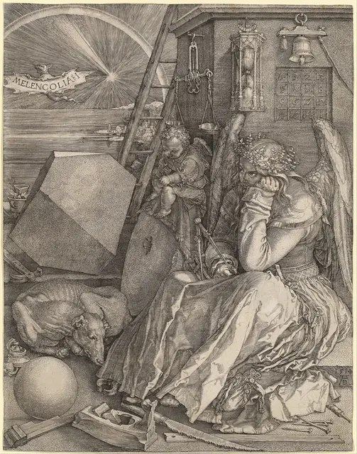
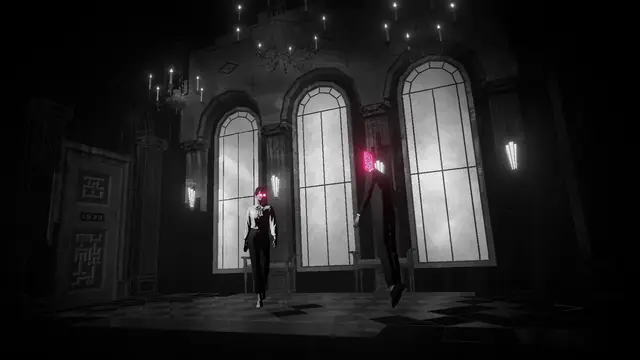
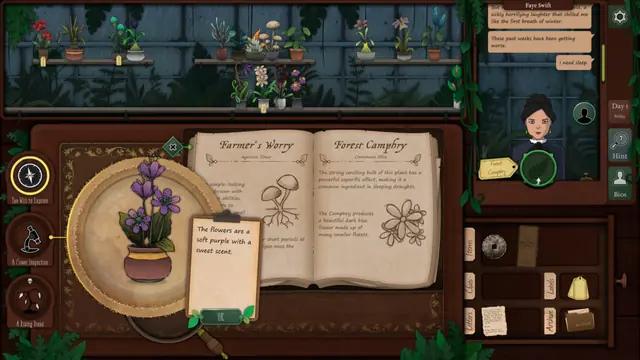
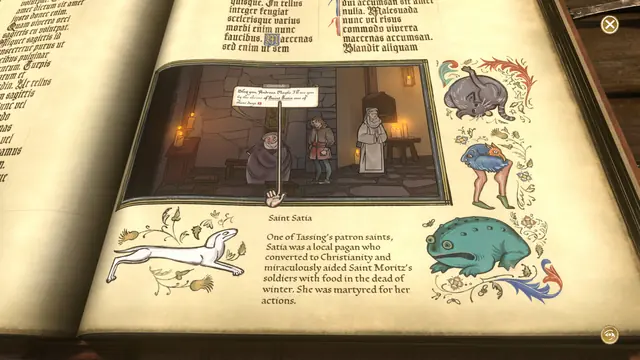
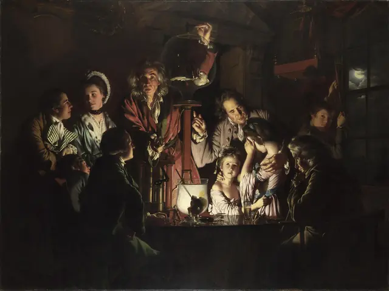
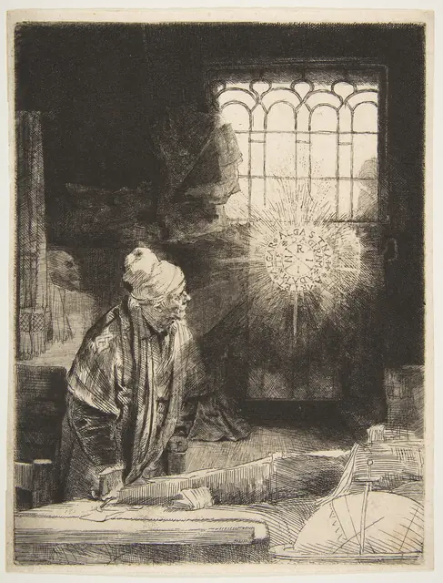
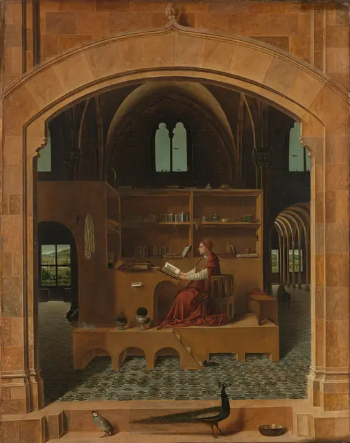
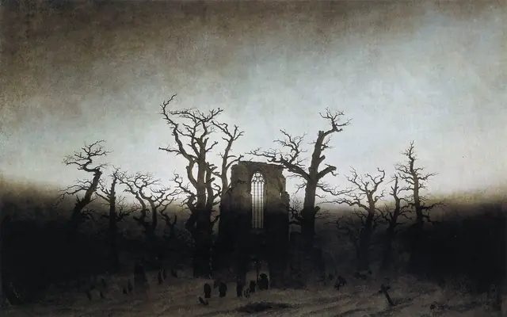
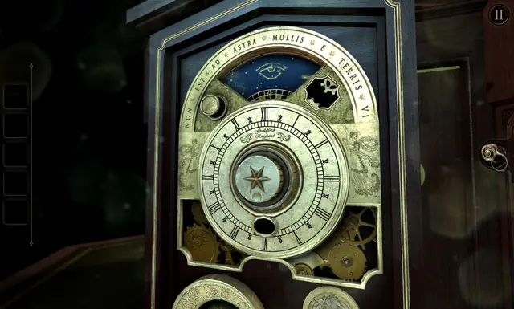
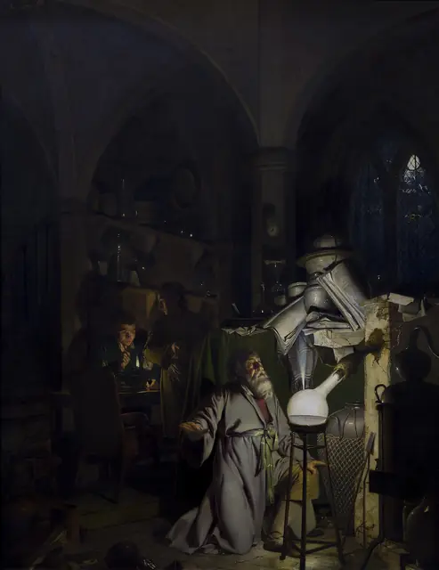

The feel
Dark academia romanticises study. It recreates the atmosphere of boarding schools and colleges from the last decades of the nineteenth century to the 1940s: neo-Gothic architecture, tweed, lace, wool and leather, literature, art and Romantic longing.1 Its followers picture all-nighters in dimly lit libraries, tea by candlelight, late writing at a vintage desk and dreary weather.2
Knowledge is the thing being romanticised, and in the stories behind it, it can hurt you: they put death, murder and destruction one step away from intellectual brilliance.1 For the light, study Joseph Wright of Derby's candlelight paintings of the 1760s, small dark rooms full of people lit by one flame.3,4 In a game the style puts reading at the centre: Pentiment has no voiced dialogue, so its handwriting takes on part of a voice actor's job.5
- candlelit
- bookish
- secretive
- tenured
- melancholy
- after-hours
Where it comes from
The look is older than its name. It draws heavily on the campus novel, a genre that readily merges with the murder mystery, and its book par excellence is Donna Tartt's The Secret History (1992).6 Tartt's novel, widely called the aesthetic's Bible, and the film Dead Poets Society (1989) are its key sources.1 The aesthetic grew quietly on Tumblr from around 2014, reached Instagram around 2017 and broke through on TikTok in early 2020, when lockdowns closed campuses.1
Core elements
Single candle light
Candles run through the aesthetic, from books lit by candlelight to letters sealed with wax.1,2 Joseph Wright of Derby is the painter to study: one candle lights the faces, and where its light does not reach, colour and form disappear into blackness.4 His trick is to hide the flame behind a figure: in the Orrery the lamp shows only as a reflection below the elbow of a silhouetted youth.7
Libraries and neo-Gothic halls
The settings are neo-Gothic buildings, libraries and museums.1 Fans picture whole days in the Wren Library at Trinity College, Cambridge, and the historic city of Durham turns up in their videos.2 For a level, start from a real building: one Unreal artist based his Gothic library on Chetham's Library in Manchester and borrowed details from the Gloucester cloister and Oxford college hallways.8
Tweed and an autumn palette
Tweed blazers, turtlenecks, wool sweaters, plaid skirts and Oxford shoes, in muted, earthy colours layered as if for a crisp autumn day.9,2 The colours are autumnal,6 and the palette keeps to dark sepia, brown, grey and black.1
Books and handwriting
Books are everywhere: in piles, as worn paperbacks and as antique leather-bound volumes.2,1 So is handwriting: notes in Latin, cursive on parchment, feather pens spilling ink on yellowed paper, and quotations set in a gothic font.9,1
Scientific instruments
Wright built candlelight paintings around an orrery and an air pump, celebrating a new appetite for learning.4 The Room grew from the Hellraiser puzzle box crossed with Chinese puzzle boxes, and its later boxes came from research into antique furniture, ancient devices and timepieces.10
Occult and esoteric study
The occult half of the style comes from the education it idealises, one where esoteric and mysterious subjects were not hidden away, and from a mood of mystery, Romantic madness and perhaps murder.1 Its campus stories look at the dysfunctional side of academia, from overwork to morally dubious professors,6 and online it blurs into witchy aesthetics, since posters use both tags.9 The Room's makers wanted only "a whiff of the historical and supernatural".10
How to do it
Light the room with hidden candles
Build the interior very dark, then add point lights one at a time. Give every candle, candelabrum and wall light its own light inside a reusable asset, so you can change them all at once.8 Hide the source behind a figure or an object, as Wright hid the candle in the Air Pump behind a rounded glass holding a skull.4
Set the colour temperature
Where your lights take a colour temperature, type it in instead of picking an orange by eye: 1800 K for candle light, 2700 K for a soft warm bulb and 6500 K for white.11 For a second source, add moonlight as a light blue directional light,8 or paint a full moon in the window, as Wright did in the Air Pump and The Alchymist.7
Randomise one book model
Make one book mesh with 2 or 3 texture variations, and let one reusable asset set each book's size, tilt and colour and the length of the row.8 The same tool drops stacks anywhere, so the room looks used by old librarians. Finish with volumetric fog and dust particles.8
Design tactile puzzle objects
The Room's box is solved by hand, pushing sliders and pulling switches with a finger, and the room around it is little more than a place to stand.10 Its makers spent their effort on the look and feel, with "a lot of nerding out on the materials".12
Set readable body text
For body text on screen, Matthew Butterick's rules for the web are a sound start: 15 to 25 pixels, line spacing at 120 to 145% of the point size, and lines averaging 45 to 90 characters. Use real small caps or none at all, with 5 to 12% extra letterspacing.13
Give each speaker a script
Give each kind of speaker a script, as Pentiment does: a peasant script for peasants, a humanist script for the university-educated, Gothic blackletter for old monks and printed type for printers.14 Its words appear stroke by stroke and bleed a little like ink on parchment.14 Draw several versions of each letter so that repeats never match (its Humanist Script has 4 of every letter), and offer one legible script for every voice.5
Darken colours away from the light
Change colours as they leave the light: in the Air Pump a red robe is salmon pink by the candle and darkens to magenta further away, and where the light does not reach, colour and form vanish into black.4 Wright laid silver leaf where light passes through paper, cloth or hot wax, and built his tones from small marks, dabbed, whiskered and dragged.3
Cheat sheet
- Era
- Late 1800s to the 1940s1
- Palette
- Dark sepia, brown, grey and black1
- Materials
- Tweed, lace, wool and leather1
- Candle light
- 1800 K, against 6500 K for white11
- Moonlight
- A light blue directional light8
- Book kit
- One mesh, 2 or 3 textures, random size, tilt and colour8
- Body text
- 15 to 25 px, 120 to 145% line spacing, 45 to 90 characters a line13
Do
- Hide the flame and light the faces, as Wright did with the lamp in the Orrery.7
- Let the lettering tell players who is speaking, down to their class and education.14
- Research antique furniture, old devices and timepieces before you design a puzzle object.10
- Keep the story spare enough that players read into it, as they would a novel.12
- Spend real time on how books and documents render on screen.15
Avoid
- Going through the motions. Done for its own sake, the aesthetic turns into kitsch.1
- A cast and reading list drawn only from white, Western men. The underrepresentation of people of colour and women is the core criticism of the scene,1 and newer creators are working to change it.2
- Lettering players can't read. Pentiment's type designers modernised their blackletter capitals for today's readers,5 and its fonts only repeat information given elsewhere, so an easy reading mode loses nothing.14
- Rows of identical books. Randomise size, tilt and colour, so the shelves look used.8
- Washing it out. Lighter palettes, linen, flowers and light music belong to light academia, a neighbouring aesthetic.1
Tools and tutorials
- Practical Typography
Matthew Butterick's free web book. Start here to set an interface like a page.
- EB Garamond
A free Garamond, and the text face of this page.
- Gurney Journey
James Gurney's painting blog. Search it for candlelight and lamplight.
- Poly Haven
Free CC0 wood, leather and paper materials to start your shelf kit.
- Gothic Library in UE4
Eugen Čanić's candlelit library scene: dark interior, one light per candle and a randomised book kit.8
- Unity: Light.colorTemperature
Colour temperature for lights, with 1800 K for a candle.11
Palette
Sampled from the Orrery's brass, Rembrandt's window, the shelves of Strange Horticulture and the pages of Pentiment.
Feel the vibe
Listen
Posts in the aesthetic often come with classical music.1 One cello, for working late.
YouTubeSlow strings for the last week of term.
YouTubeJosh Sawyer asked the early music ensemble Alkemie to score Pentiment.16
YouTubeThe official score at its most scholarly and strange.
YouTubeA piano figure to think over a puzzle by.
YouTube
More references










Games
- The Room
Hellraiser's puzzle box crossed with Chinese ones. The benchmark for objects worth handling.10
- Pentiment
Manuscript art as the interface, with lettering that changes with who is speaking.14
- Strange Horticulture
Study how much one desk, one book and one map can hold.
- Hogwarts Legacy
The big-budget version: vaulted halls, libraries and classrooms you can walk through.
- Lorelei and the Laser Eyes
Black and white with one pinkish-red hue, and documents its makers worked hard to render.15 Keep a notebook beside you.
Film, art and more
- A Philosopher Lecturing on the Orrery
Joseph Wright of Derby. The lamp shows only as a reflection below a silhouetted youth's elbow.7
- Melencolia I
Albrecht Dürer. The patron image of the overthinker.
- The Name of the Rose
Umberto Eco. Read it for its labyrinth of a library.
- The Secret History
Donna Tartt. Widely called the aesthetic's Bible.1
- Dead Poets Society
A key source for the aesthetic, and for the school uniforms its fans copy.1,2
- The Elements of Typographic Style
Robert Bringhurst. Everything this page does with type, explained.
Sources
- 1Dark Academia: Curating Affective History in a COVID-Era Internet Aesthetic
- 2A guide to ‘dark academia,’ the TikTok-popular aesthetic with preppy style and an intellectual focus
- 3Getty Exhibition Shines Light on Luminous Candlelights by Joseph Wright of Derby
- 4Joseph Wright of Derby, An Experiment on a Bird in the Air Pump
- 5Giving characters a typographic voice in Obsidian’s new RPG
- 6Dark Academia’s Roots Lie in the Campus Novel
- 7In the glow of the candle
- 8CGMA Student Project: Gothic Library in UE4
- 9Dark Academia is the witchy literary aesthetic sweeping TikTok
- 10Behind the touchscreen: The Room
- 11Light.colorTemperature
- 12Thinking outside the box: The making of The Room
- 13Summary of key rules
- 14How Pentiment's hand-crafted fonts give pen and ink a voice
- 15Lorelei and the Laser Eyes
- 16Josh Sawyer and Alkemie create an immersive Medieval experience in 'Pentiment'